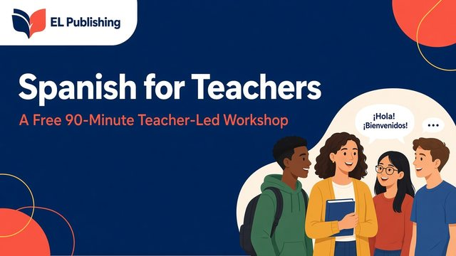
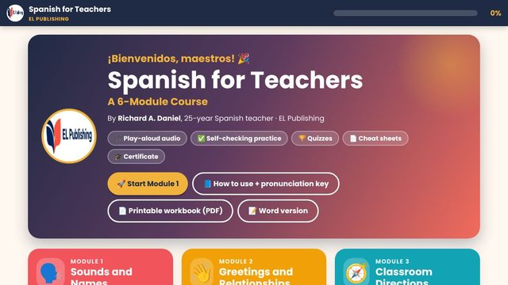
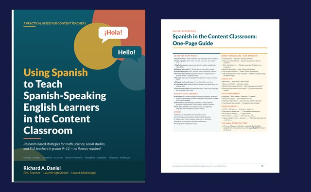
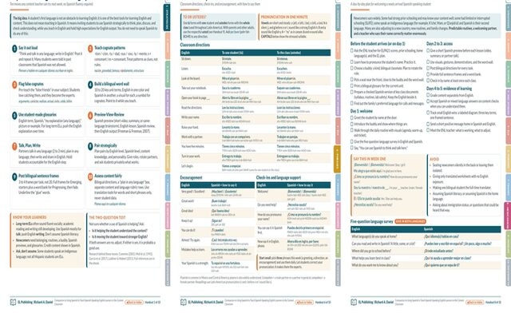
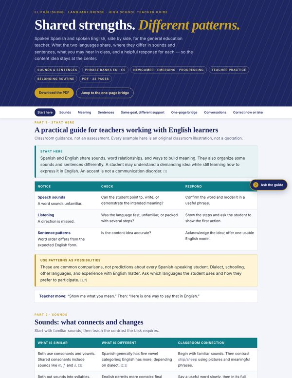
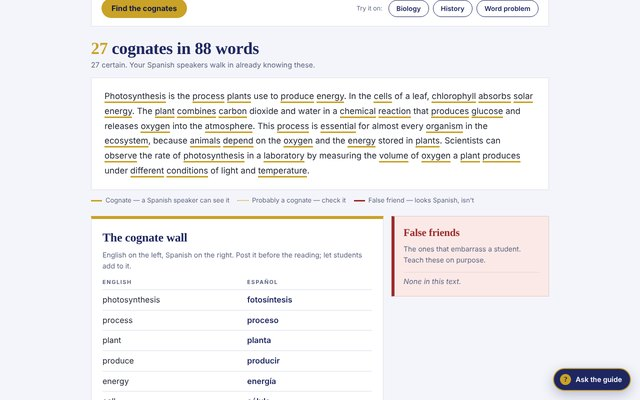

Six pieces for the content teacher who speaks no Spanish: the 90-minute teacher-led workshop, the self-paced six-module course with audio, Using Spanish in the Content Classroom (the research-based guide for math, science, social studies and ELA), the Teacher Handout Folder (ten one-page handouts), Spoken Spanish & Spoken English (what you will hear and a reply for each), and Cognate Hunt (paste any reading; the words your Spanish speakers already know light up).

Spanish for Teachers: a 90-Minute WorkshopA teacher-led workshop for colleagues who speak no Spanish: names, directions, encouragement, the call home.Workshop · 90 min · 72 phrases

Spanish for Teachers: the 6-Module CourseSelf-paced from names and greetings to the family call: audio phrases, self-checking practice, quizzes, cheat sheets, a printable workbook and a certificate.Course · 6 modules · 45–60 min each

Using Spanish in the Content ClassroomResearch-based moves for math, science, social studies and ELA teachers who speak no Spanish: cognates, talk-then-write, fair assessment.PDF guide · 40 pages

Teacher Handout Folder: Using SpanishTen one-page handouts from the guide: cognate lists by subject, the phrase bank, frames by level, newcomer week one, a family call script.PDF handouts · 10 pages

Spoken Spanish & Spoken EnglishWhat you will hear from a Spanish speaker, and a useful reply for each.PDF guide · 23 pages

Cognate HuntPaste any reading; the words your Spanish speakers already know light up.Tool · 373 pairs